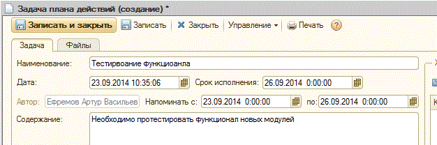
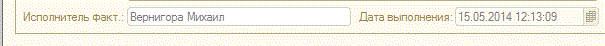
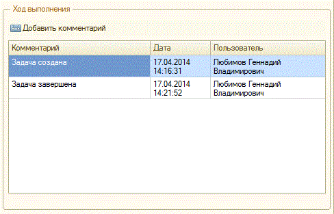
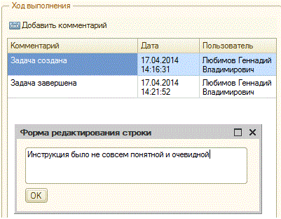
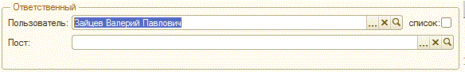
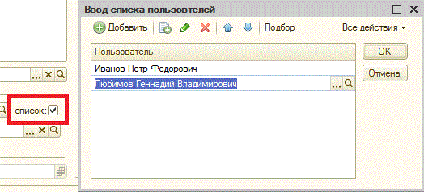

Создать задачу - Данный вариант используется , когда необходимо получить конкретный результат деятельности от какого-либо сотрудника организации. Чаще всего задания пишутся руководителями предприятий для своих подчинённых.
На вкладке указывается основная информация о задаче: наименование, содержание, пользователь и т.д.

Рис.2 Указание пользователя в задаче.
Чтобы поставить задачу списку пользователей необходимо нажать на кнопку "Список пользователей" рядом с полем «Пользователь» , в открывшемся списке указать пользователей задачи и нажать "Готово" (Рис. 3).

Рис.3 Указание списка пользователей в задаче.
Если задача создаётся для группы пользователей, то она отправляется каждому пользователю, как отдельная задача, которую нужно выполнить каждому сотруднику в списке исполнителей по отдельности.

Рис.4 Создание задачи на пост организации.

Рис.5 Заполнение даты заполнения задачи.

Рис.6 Ход выполения.

Вкладка содержит файлы по задаче, можно добавлять, открывать, сохранять файлы по задаче .
После создания задачи пользователю, она отображается у него в комцентре в группе «Входящие».
Чтобы перевести задачу в исполнение необходимо:
если задача поставлена пользователю, нажать кнопку «В работе».
если задача поставлена посту, зайти в меню «Управление» и выбрать пункт «Взять в работу».
Меню «Управление» содержит действия, которые можно произвести над задачей:
Не напоминать — при установленном интервале напоминая о новых задачах в настройках напоминания по задаче происходить не будет.
Отказаться — отказаться от выполнения задачи.
Передать другому сотруднику — передать задачу на выполнение другому сотруднику, после выбора данного пункта на экране появится формы выбора пользователя, которому перенаправляется задача.
Чтобы отметить выполнение задачи необходимо нажать кнопку «Выполнена».
После выполнения задачи пользователей, она передается на проверку автору. Автор имеет возможность вернуть задачу исполнителю на доработку, для этого можно добавить комментарий в ход выполнения задачи и нажать кнопку «Вернуть на доработку».
По кнопке «Печать» можно сформировать печатную форму задачи.
ЗРС состоит из вкладок: «Задача», «Файлы».
Наименование. Краткое содержание задачи.

Рис.8 Установка периода напоминания о новой задаче
Ситуация. Заполняется подробным описанием ситуации.

Рис.9 Описание ЗРС

Рис.10 Указание пользователя в задаче.
Чтобы поставить задачу списку пользователей необходимо нажать на кнопку "Список пользователей" рядом с полем «Пользователь» , в открывшемся списке указать пользователей задачи и нажать "Готово" (Рис. 11).

Рис.11 Указание списка пользователей в задаче.
Если задача создаётся для группы пользователей, то она отправляется каждому пользователю, как отдельная задача, которую нужно выполнить каждому сотруднику в списке исполнителей по отдельности.
Пост. Выбирается пост организации из справоника "Оргсхема", на который ставится задача (Рис. 12).

Рис.12 Создание задачи на пост организации.
В соответствии с «Адресацией задач коммцентра» поставленная задача отображается у пользователей поста (Рис. 13).

Рис.13 Адресация задач коммцентра.
Вкладка содержит файлы по задаче, можно добавлять, открывать, сохранять файлы по задаче .